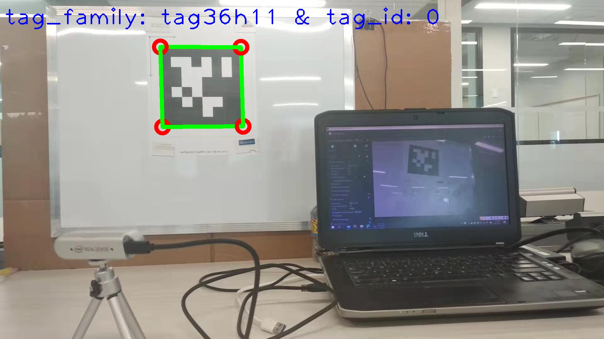

Miaomiao Wang (王苗苗)
 |
Department of Electrical Engineering |
About Me
I am currently a Postdoctoral Fellow with the Department of Electrical Engineering, Lakehead University,
under the supervision of Prof. Abdelhamid Tayebi.
Postdoctoral Associate, (2020-2021)
Western University, Canada, (Prof. Abdelhamid Tayebi)Ph.D., Robotics and Control Engineering, (2016-2020)
Western University, Canada, (Prof. Abdelhamid Tayebi)M.Sc., Control Engineering, (2014-2015)
Lakehead University, Canada, (Prof. Abdelhamid Tayebi)B.Eng., Control Science and Engineering, (2009-2013)
Huazhong University of Science and Technology, China (Prof. Housheng Su)
Research Interests
Nonlinear state estimation and control with applications to autonomous robotic systems including
Nonlinear state estimation for inertial navigation systems
Geometric control of autonomous robotic vehicles
Robot navigation and obstacle avoidance
Coordination of multi-robot systems
|  |
Publications
Selected Journal Articles
J. Wu, M. Wang, Y. Jiang, B. Yi, R. Fan, and M. Liu, ‘‘Simultaneous Hand-Eye/Robot-World/Camera-IMU Calibration’’,
IEEE/ASME Transactions on Mechatronics, in press, 2021. [PDF] [Bibtex]M. Wang and A. Tayebi, ‘‘Hybrid feedback for global tracking on matrix Lie Groups $SO(3)$ and $SE(3)$’’,
IEEE Transactions on Automatic Control, in press, 2021. (Regular Paper) [arXiv] [Bibtex]M. Wang, S. Berkane, and A. Tayebi, ‘‘Nonlinear observers design for vision-aided inertial navigation systems’’,
IEEE Transactions on Automatic Control, in press, 2021. (Regular Paper) [arXiv] [Bibtex]S. Qiu, M. Wang, and M. Kermani, ‘‘A fast and accurate new algorithm for hand-eye calibration on $SO(3) \times \mathbb{R}^3$ ’’,
Control Engineering Practice, 109, 104726, 2021. [PDF] [Bibtex]M. Wang and A. Tayebi, ‘‘Nonlinear state estimation for inertial navigation systems with intermittent measurements’’,
Automatica, 122, 109244, 2020. (Regular Paper) [arXiv] [Bibtex]M. Wang and A. Tayebi, ‘‘Hybrid nonlinear observers for inertial navigation using landmark measurements’’,
IEEE Transactions on Automatic Control, 65(12), pp. 5173-5188, 2020. (Regular Paper) [arXiv] [Bibtex]S. Qiu, M. Wang, and M. Kermani, ‘‘A new formulation for hand-eye calibration as point set matching’’,
IEEE Transactions on Instrumentation and Measurement, 69(9), pp. 6490-6498, 2020. [PDF] [Bibtex]M. Wang and A. Tayebi, ‘‘Hybrid pose and velocity-bias estimation on $SE(3)$ using inertial and landmark measurements’’,
IEEE Transactions on Automatic Control, 64(8), pp. 3399-3406, 2019. [PDF] [arXiv] [Bibtex]
Selected Conference Proceedings
M. Wang and A. Tayebi, ‘‘Nonlinear attitude estimation using intermittent linear velocity and vector measurements’’,
in Proc. of the 60th IEEE Conference on Decision and Control (CDC), pp. 4707-4712, 2021. [arXiv] [Bibtex]M. Wang and A. Tayebi, ‘‘Observers design for inertial navigation systems: a brief tutorial’’,
in Proc. of the 59th IEEE Conference on Decision and Control (CDC), pp. 1320-1327, 2020. [arXiv] [Bibtex]M. Wang and A. Tayebi, ‘‘A new hybrid control strategy for the global attitude tracking problem’’,
in Proc. of the 58th IEEE Conference on Decision and Control (CDC), pp. 7222-7227, 2019. [PDF] [Bibtex]M. Wang and A. Tayebi, ‘‘Nonlinear observers for stereo-vision-aided inertial navigation’’,
in Proc. of the 58th IEEE Conference on Decision and Control (CDC), pp. 2516-2521, 2019. [PDF] [Bibtex]M. Wang and A. Tayebi, ‘‘A globally exponentially stable nonlinear hybrid observer for 3D inertial navigation’’,
in Proc. of the 57th IEEE Conference on Decision and Control (CDC), pp. 1367- 1372, 2018. [PDF] [Bibtex]M. Wang and A. Tayebi, ‘‘Geometric nonlinear observer design for SLAM on a matrix Lie Group’’,
in Proc. of the 57th IEEE Conference on Decision and Control (CDC), pp. 1488-1493, 2018. [PDF] [Bibtex]M. Wang and A. Tayebi, ‘‘Globally asymptotically stable hybrid observers design on $SE(3)$’’,
in Proc. of the 56th IEEE Conference on Decision and Control (CDC), pp. 3033-3038, 2017. [PDF] [Bibtex]
Dissertations
Miaomiao Wang, ‘‘Geometric State Observers for Autonomous Navigation Systems’’,
Ph.D. thesis, Western University, London, ON. Canada, Jan. 2020. [PDF] [Video]Miaomiao Wang, ‘‘Attitude Control of a Quadrotor UAV: Experimental Results’’,
M.Sc. thesis, Lakehead University, Thunder Bay, ON. Canada, Dec. 2015. [PDF] [Video]
Awards
ECE Graduate Student Research Award, Western University (2019)
Ontario Graduate Scholarship (OGS), Western University (2018)
Western Graduate Research Scholarship (WGRS), Western University (2016 - 2019)
Professional Services
Editorship
Associate Board Memeber, Journal of Marine Science and Application (2021)
Guest Editor, Complexity (2021)
Special Issue on Behaviour Analysis, Complexity and Control of Networked Dynamical Systems
Guest Editor, International Journal of Aerospace Engineering (2021)
Special Issue on Load Transportation using Aerial Robots
Membership
IEEE Member (2020-present)
IEEE Student Member (2017-2019)
Review Service
IEEE Transactions on Automatic Control (IEEE TAC)
Automatica
IEEE Transactions on Control Systems Technology (IEEE TCST)
IEEE Conference on Decision and Control (IEEE CDC)
American Control Conference (ACC)
IEEE Robotics and Automation Letters (IEEE RA-L)
Control Engineering Practice
ISA Transactions
IET Control Theory & Applications
International Journal of Control, Automation and Systems